ETMES 调度系统 功能帮助文档
布易科技
管理员身份用户
1. 如何编辑管理员个人信息？
点击网页右上角的个人信息，如图：
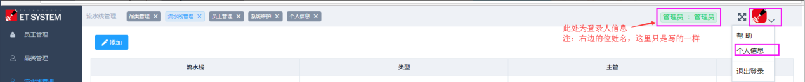2.编辑个人信息姓名，密码必填，手机号选填。2.姓名长度在 2 到 5 个字符。3.密码长度在 4 到 10 个字符。
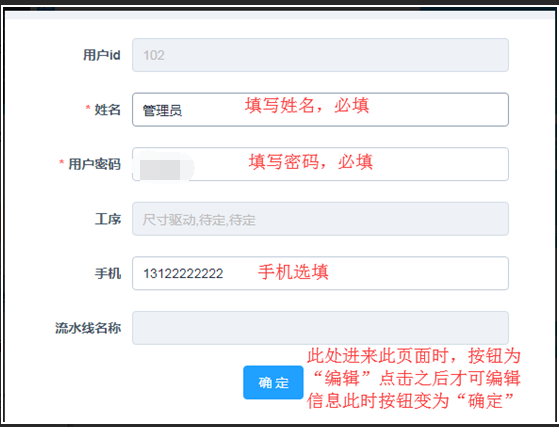3.员工管理页面可以更改员工的状态，以及重置该员工的密码。（重置密码后会提示，默认888888）
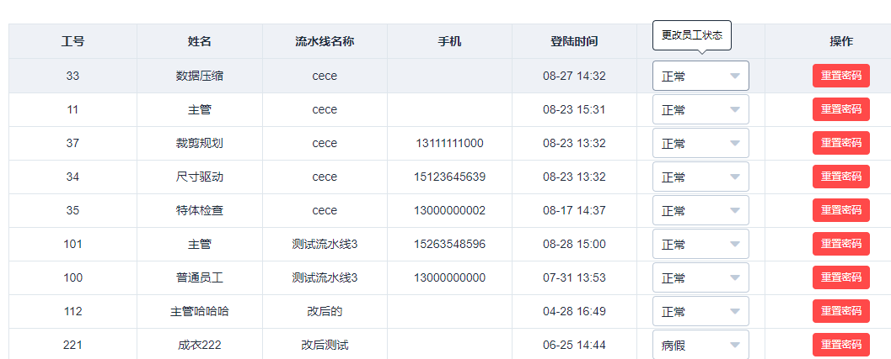4.品类管理页面点击添加按钮添加品类(不可重复添加相同品类)，点击删除按钮删除当前品类。
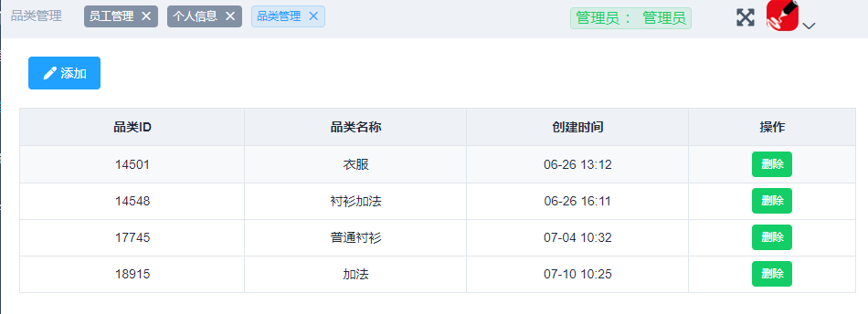5.如何新建流水线,以及编辑流水线？
①点击添加按钮添加流水线。②流水线名称与主管工号都必填。填写主管工号时，相当于添加了此员工。
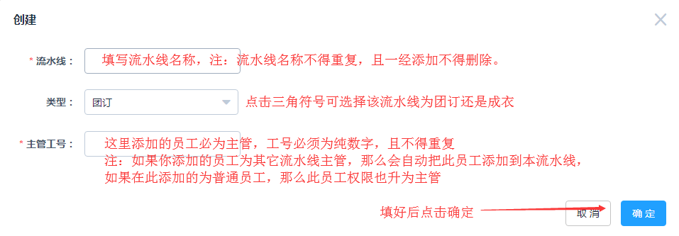下图为编辑流水线。新增主管规则与上一样。
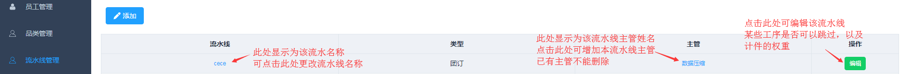6.系统维护：供服务人员使用。
主管身份用户
一、个人信息
调度页面右上角的功能。
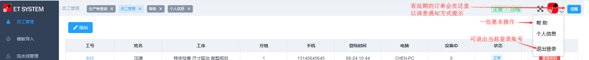个人信息如何编辑？
1.编辑个人信息姓名，密码必填，手机号选填。2.姓名长度在 2 到 5 个字符。3.密码长度在 4 到 10 个字符。
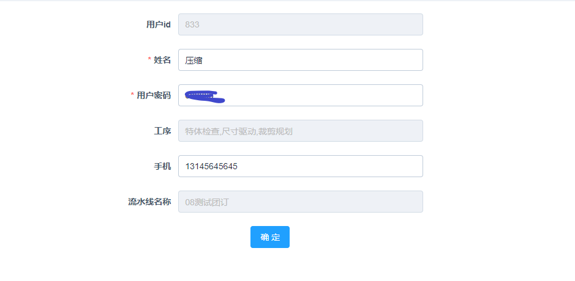二、员工管理
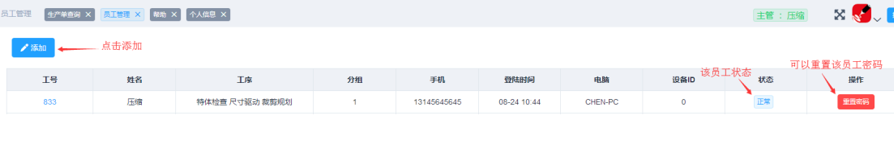1.添加员工
①工号必填且必须纯数字。工序也必选（注：只有选择特体工序后才能够选择品类且一人最多三道工序）。
②只有该员工有做‘特体检查’时，品类选择框才会出现。一旦选择品类，那么在‘特体检查’环节就只能申请该品类的任务。不选则所有品类任务都能申请
③分组（注：同一组员工只能申请同一组员工所做任务，特体检查除外）。
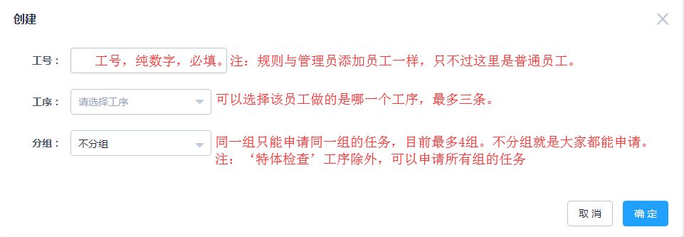2.如何编辑员工信息？
①点击员工工号进行员工信息编辑。
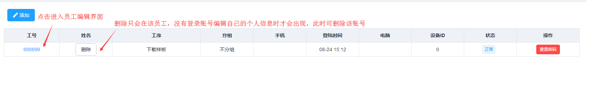 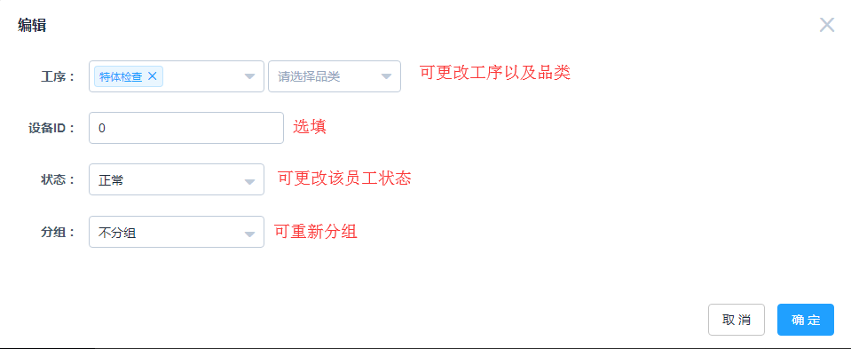三、模板导入
1.如何导入模板文件？
①在服务器上建立与主管工号相同名的文件夹，把做好的模板文件放入
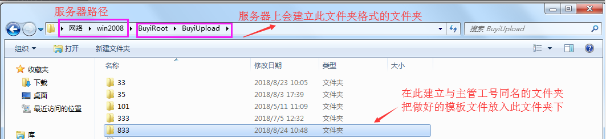②之后再登录此主管账号，填写模板信息，点击网页左侧菜单‘模板导入’
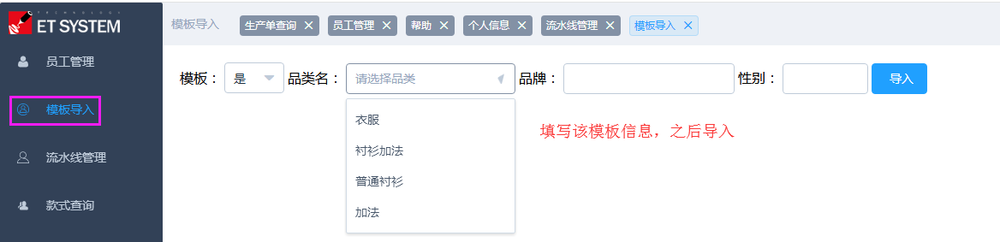③导入成功后，服务器上的模板文件会在服务器的该目录下
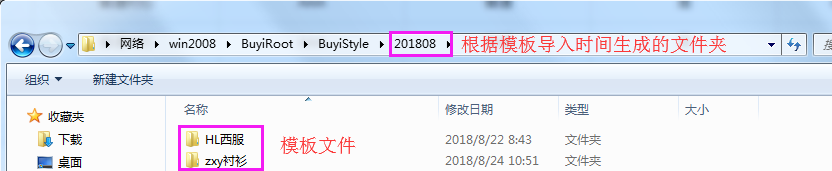 ④此功能导入模板文件方式，也可替换已上传的模板文件
替换条件：替换模板文件款名必须一样，且样式信息≥已上传的模板样式信息（注：也必须包含已上传模板的样式信息）
四、款式查询
1.查询
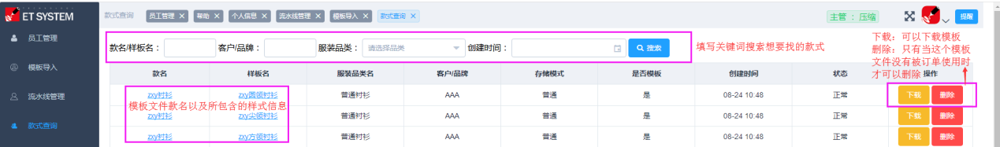2.点击款名编辑模板信息
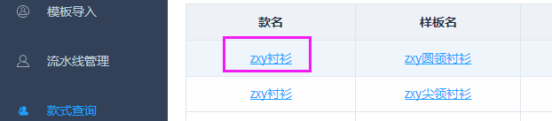3.点击样板名查看该样式由谁上传以及上传该样式图片
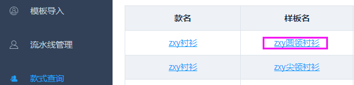4.注：如果只是单纯的想要增加一个样式。可以用下面的功能。
进入ET打版，选择定制功能菜单下的‘样式上传’，就可以新增样式。（注：此功能也只限于新增样式。）
五、流水线管理
1.如何编辑流水线？
①点击流水线名称更改流水线名。
②点击编辑按钮修改对应流水线工序的权重。
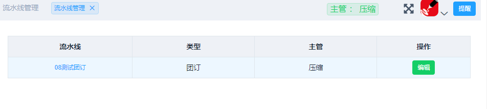六、生产单查询
1.查询
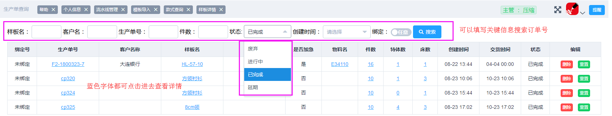2.删除：可以删除该订单
3.重置：只有已完成的生产单才能重置，且重置只是重置裁剪规划，且只能提交此生产单裁剪规划的员工才能重新下载。
4.点击生产单号进入生产单详情,特体进行特体列表详情，件数进入量体信息列表，床进入床数列表信息
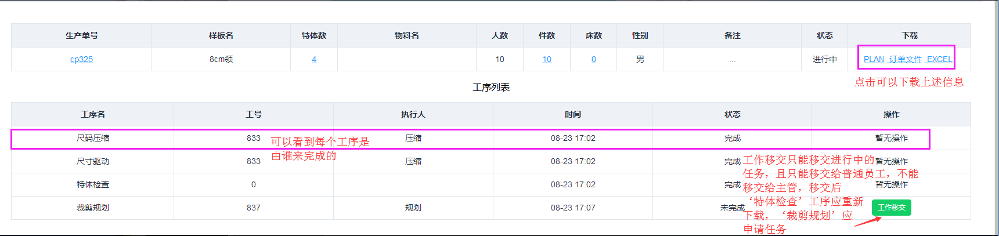5.生产单绑定
①打开绑定开关点击查询绑定的生产单。
②勾选订单前面的勾选项，之后再点击右上角的绑定，那么此订单就会绑定在一起。
③两个以上订单绑定后，在申请裁剪规划任务时，是一起申请过来的，
前提是绑定的生产单都应该做裁剪规划工序了，才能够申请任务，否则申请不了任务。
④绑定条件：①物料相同②样式一致③样式不一致④人员（指订单里的ID）人数、件数一致（两个订单之间同一人的件数能配套）。
符合①②或者①③④情况才能够绑定。
七、统计
1.往年统计
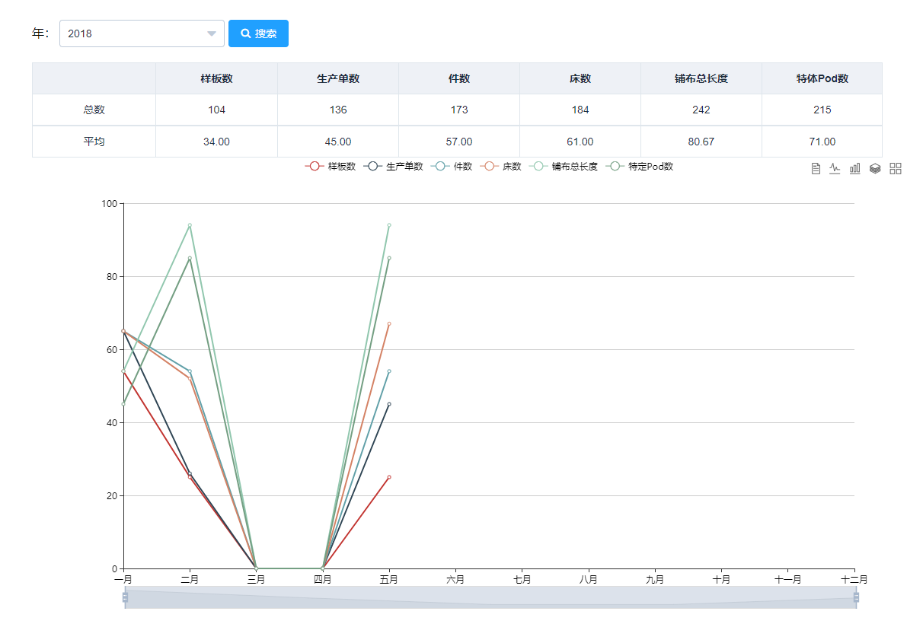2.当年统计
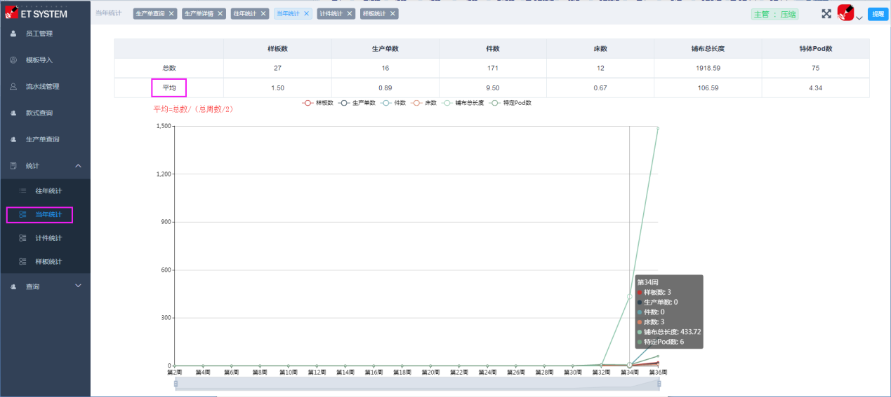3.计件统计
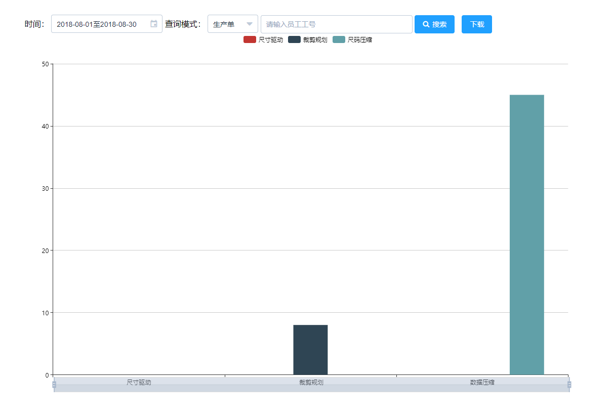4.样板统计
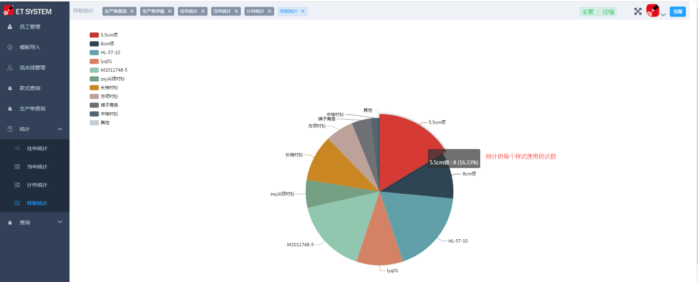八、查询
1.查看日志：可以看到未完成的订单，当前的工序走到哪一步
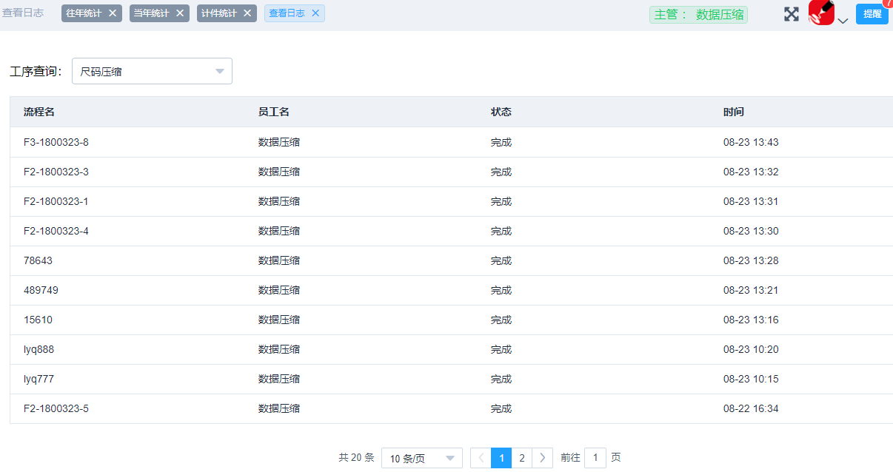2.流水号查询：可查询此流水号所有订单中的某个人员，以及下载此人的pod文件。
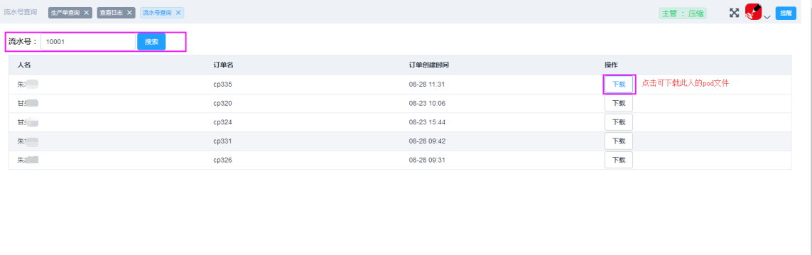普通员工身份
一、个人信息
如何编辑个人信息？
1.编辑个人信息姓名，密码必填，手机号选填。2.姓名长度在 2 到 5 个字符。3.密码长度在 4 到 10 个字符。
二、生产单查询
1.查询
2.删除：可以删除该订单
3.重置：只有已完成的生产单才能重置，且重置只是重置裁剪规划，且只能提交此生产单裁剪规划的员工才能重新下载。
4.点击生产单号进入生产单详情,特体进行特体列表详情，件数进入量体信息列表，床进入床数列表信息
5.生产单绑定
①打开绑定开关点击查询绑定的生产单。
②勾选订单前面的勾选项，之后再点击右上角的绑定，那么此订单就会绑定在一起。
③两个以上订单绑定后，在申请裁剪规划任务时，是一起申请过来的，
前提是绑定的生产单都应该做裁剪规划工序了，才能够申请任务，否则申请不了任务。
④绑定条件：①物料相同②样式一致③样式不一致④人员（指订单里的ID）人数、件数一致（两个订单之间同一人的件数能配套）。
符合①②或者①③④情况才能够绑定。
三、 计件统计
1.选择对应时间，工序查询当前计件统计 2.只能查询当前用户的计件信息
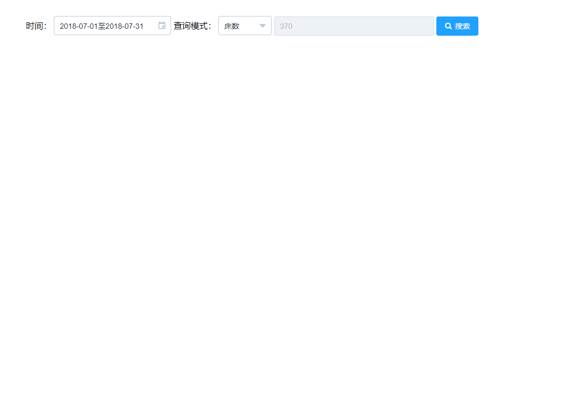四、 查询
1.查看日志：可以看到未完成的订单，当前的工序走到哪一步
2.流水号查询：可查询此流水号所有订单中的某个人员，以及下载此人的pod文件。